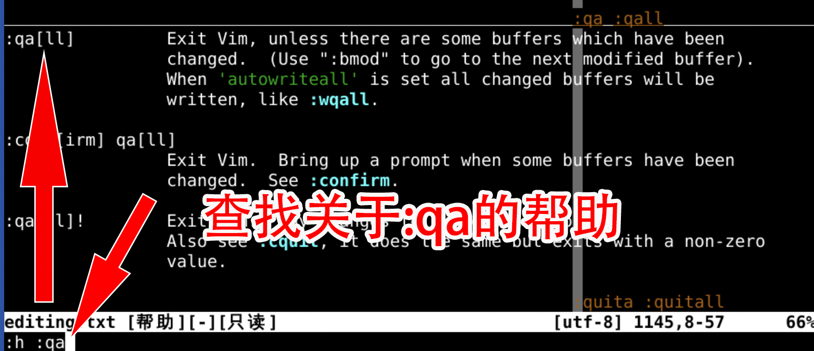
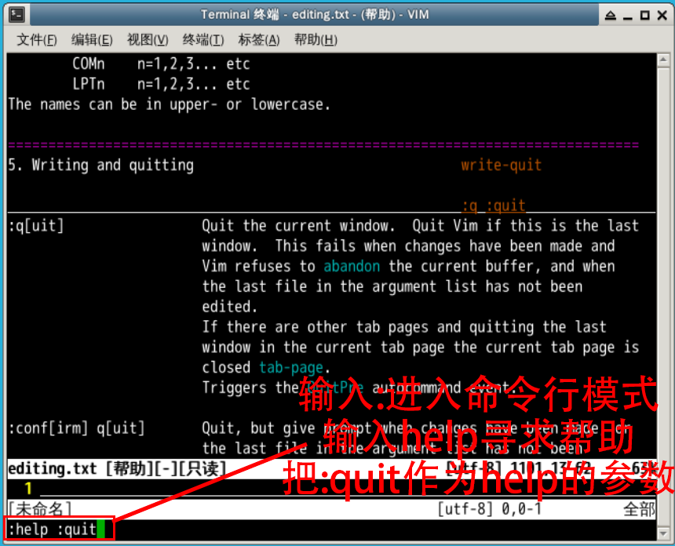
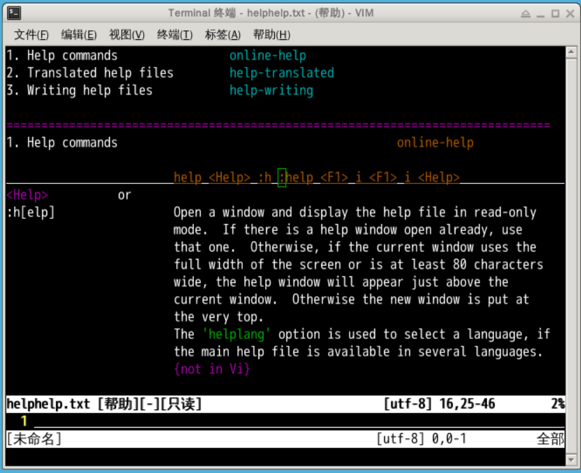
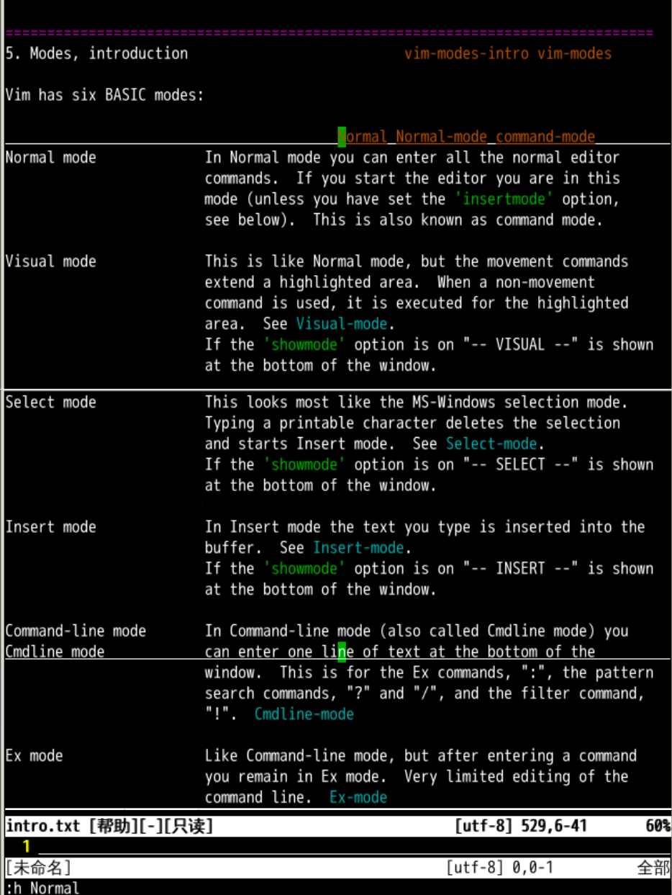

vim 中生存，必须给您更强大的工具🔧 -- 帮助手册#首先进入vim
vim
vim 之后，我们面对的是正常模式命令行 模式:help 什么:qa 不会:help 这个 :qa :help :qa:help 的对象是 :qa，中间留了一个空格
:qa[ll] 就是退出全部窗口:q 这种简写形式来退出么？:h :q 查询 关于 :q 的帮助
:q 先退出当前帮助📕:q 退出 vim: 的时候:help 了 :quit:help :quit 可以查询什么是 :quit:help 什么:help 本身不会怎么办呢？:help 什么:help 不会就 :help :help:help :help 可以查询 :help 自己的帮助
:help 完整写法位为 :h[elp]:h :q 退出帮助:h 再进入帮助:help :help 可以简写为 :h :h (Normal mode) 的事情吗？🤔vim 是有状态的编辑器 (modal editor)#使用 help 查询帮助
:help Normal
#或者把 help 简写成 h
:h Normal

(Normal mode)vim 时默认的模式所有输入的键都直接对应着命令(Insert mode)(Visual mode)(Select mode)(Command-Line mode)(多行命令执行模式)Ex 指的是 ExecuteNormal 正常模式下使用 gQ 进入:visual 退出 :help 什么:help 命令有两种写法:help:h vim 有六种基本模式